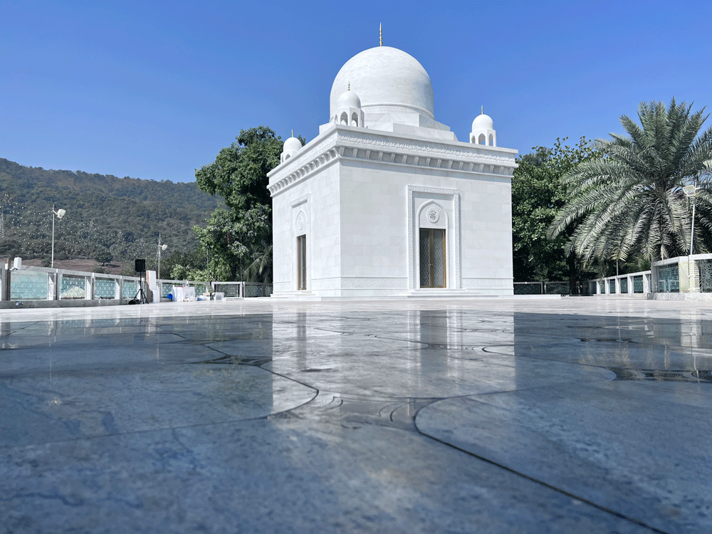

“Allah is the light of the heavens and the Earth. The likeness of His light is as a niche wherein is a lamp. The lamp is in a glass-crystal, the glass-crystal is as if it were a glittering star.”
Surat al-Noor: Ayat 35

Five years ago, His Holiness Syedna Taher Fakhruddin Saheb expressed his intention to build his predecessor and father's mausoleum, the 53rd Dai al-Mutlaq Syedna Khuzaima Qutbuddin RA’s Raudat Mubaraka. Syedna Fakhruddin resolved that the Qur‘an Majeed would shade Syedna Qutbuddin’s qabar mubarak just as it shades the qabar mubarak of Syedna Taher Saifuddin RA and Syedna Mohammed Burhanuddin RA in Raudat Tahera. The 53rd Dai al-Mutlaq His Holiness Syedna Khuzaima Qutbuddin was a beacon of divine light, noor. His father the 51st Dai Syedna Taher Saifuddin described him in his risalat as “a shining star in the sky of virtue.”
His luminous personage was a guiding light, and his radiant visage a source of comfort and tranquility for all blessed to meet him. It is befitting therefore that his mausoleum, aptly named Raudat-un-Noor, “shines for the people of the sky as the stars shine for those on Earth” as expressed by his successor the 54th Dai al-Mutlaq Syedna Taher Fakhruddin TUS. Upon reflection, we can scarcely believe that such an incredible force of humanity and spirituality graced our lives.
Today, Syedna Qutbuddin’s mausoleum stands as a symbol of his lofty station, a realization of Syedna Fakhruddin holy vision, and an expression of Mumineen’s deep reverence.
The concept of noor is demonstrated through the various exquisite design elements incorporated into Raudat-un-Noor - its crystal doors, gleaming white Makrana marble structure, the illuminated Ayat-un-Noor collar on the outer walls and the gold leafed inscription of the entire Qur’an Majeed on the inner marble walls of Raudat-un-Noor.